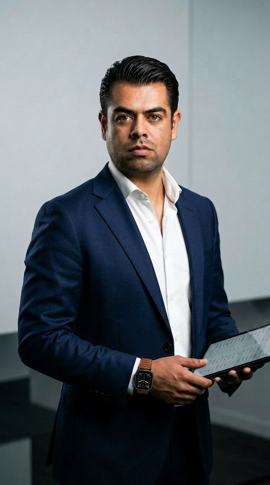
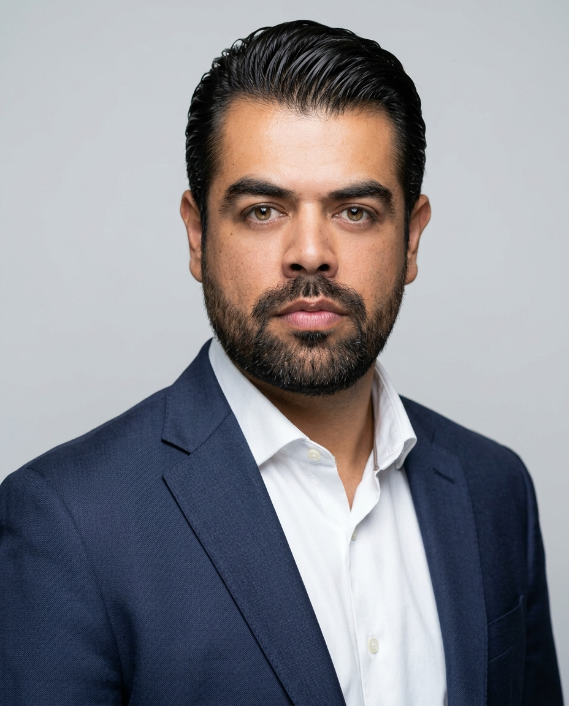

GUARDIAN ARCHITECT
Luis Téllez
Estratega de Ciberseguridad y Arquitectura Tecnológica
Diseñando ecosistemas digitales resilientes y arquitecturas Zero Trust para infraestructuras críticas empresariales.
Conectar en LinkedIn arrow_forward
Perfil Profesional
15+ Años de Liderazgo en Arquitectura Tecnológica
Experto en el diseño, implementación y evolución de arquitecturas de red complejas y estrategias de ciberseguridad. Especializado en entornos críticos como ISPs, infraestructuras Cloud multi-tenant y Data Centers de alta disponibilidad.
Mi enfoque se centra en alinear la visión tecnológica con los objetivos de negocio corporativos, mitigando riesgos sistémicos mediante metodologías Zero Trust y liderando equipos multidisciplinarios de alto rendimiento para garantizar la resiliencia operativa a escala nacional e internacional.
Trayectoria Profesional
Evolución estratégica liderando la arquitectura de seguridad y redes para infraestructuras críticas.

Director de Arquitectura de Ciberseguridad
- Lidera la función de Arquitectura de Ciberseguridad, creándola y consolidándola para diseñar modelos de seguridad on-premises, cloud e híbridos.
- Habilita el despliegue seguro de nuevas aplicaciones y evalúa las existentes conforme a estándares para proteger la confidencialidad, integridad y disponibilidad de los sistemas.
Gerente de Telecomunicaciones
- Responsable de la seguridad perimetral del conglomerado, el diseño de redes core y la seguridad de datos.
- Supervisó el análisis de desempeño de aplicaciones, gestión de ancho de banda y pruebas e implementación de nuevas tecnologías de seguridad.
- Desarrolló planes de CAPEX y OPEX para iniciativas estratégicas.
Gerente de Arquitectura de Redes
- Lideró el diseño de propuestas de conectividad e iniciativas de mejora de red a nivel corporativo.
- Gestionó la relación con proveedores y realizó evaluaciones y pruebas de tecnología de transporte.
Formación Académica
Maestría en TI e Inteligencia Analítica
Universidad Anáhuac
En curso. Formación avanzada en inteligencia de negocios, analítica de datos aplicada e integración de tecnologías de la información.
Ingeniería en Comunicaciones y Electrónica, especialidad en Electrónica
Instituto Politécnico Nacional (IPN) - ESIME Zacatenco
Graduado. Especialización en diseño de sistemas electrónicos, telecomunicaciones y procesamiento de señales.
Hitos Estratégicos
Creación de la Función
Creó y consolidó la función de Arquitectura de Ciberseguridad a nivel corporativo dentro del grupo.
Diseño de Centro de Datos
Diseñó las arquitecturas de red y ciberseguridad para el nuevo centro de datos de alto desempeño del conglomerado.
Estrategia Cloud & Multi-Cloud
Diseñó la arquitectura de comunicaciones y ciberseguridad para entornos híbridos y multi-nube corporativos.
Despliegue Zero Trust
Lideró la implementación del modelo Zero Trust Network Access (ZTNA) en la red de usuarios del conglomerado.
Liderazgo Alto Rendimiento
Lideró equipos multidisciplinarios de gerentes, project managers, ingenieros y fabricantes de tecnología.
Asegurando el Futuro Digital
Para consultas sobre arquitectura estratégica, consultoría o colaboraciones profesionales, la vía de contacto principal es a través de LinkedIn.
Conectar en LinkedIn